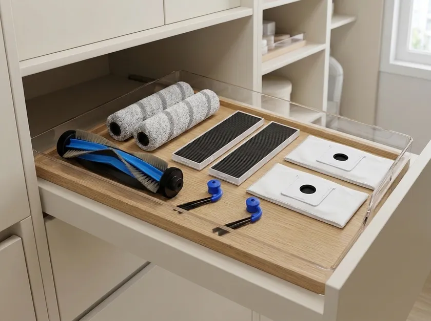

에코백스 (ECOVACS)
에코백스 디봇 X11 프로 옴니 직배수 롤러 건조·흡입력 관리｜1년 소모품 세트
글·구성: 제이상점 · 기종별 1:1 호환 실물 점검 · 교체 주기 비교표 · 스마트스토어 패키지 안내

핵심 관리 · 선택 체크포인트
- 청소 예약은 매일 꼬박꼬박 돌아가는데 요즘 부쩍 직배수 또는 대용량 스테이션으로 편리하게 쓰던 에코백스 X11 프로 옴니에서 롤러 건조 후 미세한 냄새가 남거나 카펫 먼지 포집량이 줄어든 느낌 때문에 신경 쓰이셨나요?
- 냄새와 흡입력 차이를 만드는 에코백스 X11 프로 옴니 교대 케어 포인트: 실사용 만족도를 가르는 핵심 부위는 단연 장폭 극세사 스트라이프 원통형 롤러 슬리브와 블루·블랙 엉킴 방지 V자 브러시입니다.
- 에코백스 X11 프로 옴니 냄새·흡입력 복원 부위별 점검 기준표: 번거로운 분해 수리 전에 아래 세 가지 핵심 구간만 순서대로 교대 점검해 주셔도 바닥 뽀송함과 집진 효율이 눈에 띄게 달라집니다.
- 여분 교대가 편해지는 에코백스 X11 프로 옴니 기간별 옵션 선택 가이드: 만약 소모품과 함께 도크 자동 투입용 정품 바닥 세정액도 새로 채워야 하신다면, 소모품 세트는 6개월·1년(세제 미포함)으로 고르고 정품 1L 클리너만 필요한 병수대로 추가하는 조합이 가장 합리적입니다.
- 현재 대표 구성 기준가 59,100원대(옵션·할인 혜택에 따라 스토어 결제 화면 기준 상이)로 운영 중이니 우리 집 청소 주기와 남은 재고를 대조한 뒤 제이상점 에코백스 디봇 X11 프로 옴니 스마트스토어 상세 옵션에서 가장 실속 있는 구성을 선택해 보세요.
실물 부품 디테일 · 관리 구성 이미지



부품 규격 · 점검 기준표
| 집중 관리 포인트 | 에코백스 X11 프로 옴니 적용 부품 규격 | 쾌적함 유지하는 실전 교대 루틴 |
|---|---|---|
| 롤러 코어 통풍 건조 루틴 | 원통형 롤러 슬리브 예비분 교대 | 주 1회 롤러를 분리해 내부 플라스틱 통까지 바람이 통하도록 세워 건조 |
| 직배수·스테이션 악취 차단 | 전용 밀폐 더스트백 + 세척 트레이 점검 | 습기 많은 계절엔 더스트백 교체 주기를 앞당겨 도크 내부 곰팡이·냄새 예방 |
| 미세먼지 배기 청결 유지 | 다크그레이 사각 워셔블 헤파필터 | 덜 마른 필터 장착 시 쉰내 원인이 되므로 마른 여분 필터와 번갈아 사용 |
💡 교체 주기가 겹치는 필터·브러시·물걸레·더스트백은 단품 배송비를 여러 번 내기보다 에코백스 X11 프로 옴니 기간별 세트(3개월·6개월·1년)로 미리 구비해 두면 물세척 후 24시간 교대 건조까지 끊김 없이 관리할 수 있습니다.
자주 묻는 질문 (FAQ)
Q. 원통형 롤러 걸레를 분리해 씻은 뒤 다시 끼울 때 주의할 방향이나 홈이 있나요?
A. 롤러 안쪽 구동 기어 홈 모양에 맞춰 끝까지 밀어 넣은 뒤 측면 고정 걸쇠가 유격 없이 체결되었는지 손으로 한 번 굴려 확인해 주시면 주행 중 소음 없이 부드럽게 회전합니다.
Q. 옴니 스테이션 세척조에 물때가 자주 낀다면 세제와 소모품을 어떻게 함께 관리하면 좋나요?
A. 주 1~2회 세척조 거름망을 솔로 가볍게 씻어 내고, 세척수에는 저포 포뮬러의 에코백스 디봇 정품 전용 클리너 1L (1병·2병 옵션) 정품 세제를 정량 사용하면서 롤러 슬리브를 여분과 교대 건조해 주시면 훨씬 위생적입니다.
제이상점 1:1 검수 추천 패키지 · 구매 안내
메인 추천 구성
대표 구성 참고가 59,100원대 (옵션·쿠폰별 스마트스토어 결제 화면 기준)
1년 세트 (세제 미포함)6개월 세트 (세제 미포함)3개월 세트 (세제 미포함)
![[정품] 에코백스 세제 세정제 소모품 T90 T80 X5 X8 X11](../../assets/img/ecovacs-cleaner-product-274f99ea.webp)
☑️ 주문 전 확인해 두면 좋은 제이상점 안심 포인트
· 기종별 1:1 전용 규격 검수: 모델명·연식에 맞는 호환·정품 구성을 검수해 오주문 불안을 줄였습니다.
· 해외직배송 미리 주문 팁: 중국 구매대행·해외직배송 상품이므로 마지막 여분 1개를 꺼내 쓰는 시점에 개인통관고유부호와 함께 여유 있게 주문해 두시면 훨씬 경제적인 비용으로 끊김 없이 교체하실 수 있습니다.
· 기종별 1:1 전용 규격 검수: 모델명·연식에 맞는 호환·정품 구성을 검수해 오주문 불안을 줄였습니다.
· 해외직배송 미리 주문 팁: 중국 구매대행·해외직배송 상품이므로 마지막 여분 1개를 꺼내 쓰는 시점에 개인통관고유부호와 함께 여유 있게 주문해 두시면 훨씬 경제적인 비용으로 끊김 없이 교체하실 수 있습니다.
📖 더 많은 가정 내 사용 스토리와 상세 후기가 궁금하시다면
📱 네이버 블로그 모바일 원문 보기 ↗